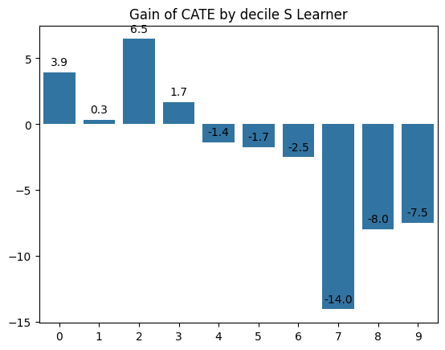
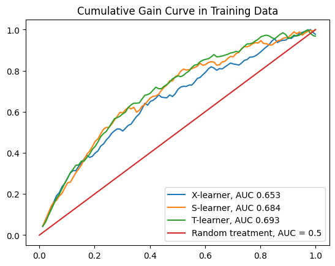

Photo by engin akyurt on Unsplash
Giving Offer to Right User¶
Business Context¶
In a ride-hailing company , keeping both customer and driver active is crucial important, because both form equilibrium.
- Lack of Driver Availability lead to scarcity and ride service cannot be provided, also can lead to extreme price, due to dynamic pricing mechanism
- Lack of Customer of course hurt a lot, driver, company, etc.
To balance those several ways can be approached, for example by giving a promo or coupon
Business Metrics¶
What is the suitable metrics for this? To help answer the question, we should answer :
- What is the goal of promo ? One of the sign that user is active can be derive from Gross Booking
Here is the relation with Revenue
$$
\begin{align} \text{Revenue from Service} &= \text{Average Revenue Per User} \cdot \text{Number of Active User} \ \text{Revenue from Service} &= \text{Average Gross Booking Per User } \cdot \text{Take Rate} \cdot (1-P(\text{Churn Rate})) \cdot \text{Total User} \
\text{Revenue from Service} &= \cfrac{\text{ Gross Booking }}{\text{Number of User }} \cdot \text{Take Rate} \cdot (1-P(\text{Churn Rate})) \cdot\text{Total User} \ \text{Revenue from Service} &= \cfrac{\text{ Gross Booking }}{((1-P(\text{Churn Rate})) \cdot\text{Total User})} \cdot \text{Take Rate} \cdot (1-P(\text{Churn Rate})) \cdot\text{Total User} \ \end{align}
$$
- Take Rate : Similar to Net Profit Margin
Business Process¶
To better understand the problem, we should understand the business process first

Problems¶
The problem is we have limited budget constraint, let say called it B we cannot surpass. How can we maximize the benefit from giving promo and still within the constraint
$$
$$
$$
$$
- GB : Gross Booking
- w_i : Binary 0/1 indicating whether user i receive promo or not
- IGB_i : Incremental Gross Booking from promo
- cost_i : Cost of Promo (Homogen) from user i
So, how do we approach this problem ?
Candidate Solutions¶
There are several ways to approach a problem , we can do some literature review, on how industry approach this
Solution 1 : Using Machine Learning¶
The first approach we can predict the outcome variable given treatment assign or not using any machine learning model.
Data Looks :
| userID | X_1 | .. | X_n | Treatment | Outcome (GB) |
|---|---|---|---|---|---|
| 1 |
Pros :
Easy to do just like machine learning case with regression or classification
Cons :
We cannot adding incrementality / the effect of treatment, hence it's biased to user which Outcome is the highest (for example user who are member )
Solution 2 : Enter Causality¶
Instead of just using machine learning to predict outcome variable, we can leverage causality to measure the incrementality of each user if user receive treatment (promo)
Pros :
Account for causality / incrementality factor
Cons :
Each user only can be observed one potential outcome, receiving treatment or not. Don't worry we still can estimate the counterfactual.
Choosen Solution :¶
Considering our need to measure incrementality we choose the Solution 2.
Step by Step Solution :
1. Running Experiment
First we need to design experiment by giving randomly coupon to user assign , however we should be aware that people who offered coupon can either accept or do not accept their coupon
graph LR
A(Coupon Assignment) -->B(Coupon Claims)
B --> C(Gross Booking)
D(Number of Bookings) --> B
E(Income) --> D
F(Membership) --> B
E --> F
F --> C
D --> C
Planning Experiment
The truth is this is that the assignment is random and the Coupon Claims is not random hence, this is suitable for Causal Inference for Observational Data
- Experiment Duration : 1 Week only
- Randomization Unit : User Level
- Chance of getting Treatment : 30%
- Which User is candidate : User who still active in past week
- Coupon Budget : $1
- Number of Users Active in Past Week : 2000
- Hence, the cost of experiment : 2000 x $ 1 = $2000
2. Estimating Treatment Effect
After we have obtained the experiment data we can train model to estimate the treatment effect
3. Choosing Whose to be Treated
After we have estimated the treatment effect on individual level, we can observe that treating all user is not good way, hence we need to choose what fraction of user to be treated
Introduction to Causal Inference¶
Sometimes we are interested in question such as "Does Implementing Minimum 9 Years Education impact GDP" and so on. That is study of Causal Inference
The Gold Standard of Measuring Causality is by Randomized Control Trial / Experiment, however sometimes treatment assignment imposible to be random or it's unethical.
There is another method , called Causal Inference with Observational Data.
Before diving more, we often heard , Correlation Does not Imply Causation
But How do we can claim causality, here is several condition to fullfil causality
- Temporal Sequencing
If we have treatment (T) and Outcome Variable (Y). It means we do some treatment first then we observe the outcome variable. For example we want to measure the effect of rising price of commodity we want to measure the Demand.
graph LR
A(Commodity Price) -->B(Demand)
- Non Spurious Relationship
One meme about this

- Removing alternate Causes (Confounding)
Previously we want to measure the effect of rising price of commodity on demand, however there are many factors affecting demand,such as seasonality
graph LR
A(Commodity Price) -->B(Demand)
C(Seasonality Confounding) --> BHow to remove this bias ?
- We could use randomization / random experiment such as A/B Test
- Controlling the Confounder for example by adding the confounding variable to model
Potential Outcome
The one who developed causality theory is Donald B Rubin, or called as Rubin Causality framework of potential outcome framework.
So what is potential outcome, let say we have a headache, how can we cure the headache, for example : we can take medicine.
The outcome or result after taking medicine
graph LR
A[Headache] -->B[Take Pills]
B --> C[Headache Gone]
B --> D[Still Headache]
A --> E[Doesnot Take Pills]
E --> F[Headache Gone]
E --> G[Still Headache]
Taking Pills or Not Taking Pills is a form of treatment say we denote as T , each person only can take one treatment at a time (take pills or not ) and only observe one outcome say we denote Y (still headache or not)
those outcome, called potential outcome.
Hence if we want to denote the outcome of each person, say \(i\) after taking pills is \(Y_{1i}\)
The Treatment effect on individuals can be define as
\(\text{Individual Treatment Effect}_i = Y_{1i} - Y_{0i}\)
However, again we can observe both at the same time then usually we come up with Average Treatment Effect
which can be define as
\(\text{Average Treatment Effect} = \text{Average Outcome on Treated individual} - \text{Average Outcome on Not Treated individual}\)
or
\(\text{Average Treatment Effect} = E[Y_1 - Y_0 ]\)
with \(E\) as expected value or simply average
Individual Treatment Effect
You said that estimating treatment effect is quite impossible, how could you over with this? Don't worry we'll talk about industry implementation
So why would you use individual treatment effects instead of Average Treatment Effect.
Typical use of Average Treatment Effect : - Program Evaluation - Research - Decision
The reason about using Individual Treatment Effect is Personalization , why ?
Individuals may react differently in different degree , for example in ride hailing case :
- We give discount offer to individual A → one week after the discount the user keep using / ordering to ride hailing apps
- But that could be different in user Z → offered discount but not reacting at all
Again what's the company interest ? Gaining Maximum Shareholder value , How ? - Could from rising the revenue - Or from reducing the cost
In case we choose the revenue, how could we give treatment such as offer so that we could maximize the revenue given budget constraint :
- We select individual if we treat → gain highest treatment effect / incremental value
\(\text{Individual Treatment Effect}_i = Y_{1i} - Y_{0i}\)
We only have one outcome at a time, hence we need to estimate the other one using model
Let's dive in
Modelling Workflow
graph LR
A[Data Preparation] -->B[Exploratory Data Analysis]
B --> C[Data Preprocessing]
C --> D[Modelling Phase]
D --> E[Finding Best Model]
Data Preparation¶
import pandas as pd
import numpy as np
import scipy.stats as st
import matplotlib.pyplot as plt
import seaborn as sns
from IPython.display import display
import warnings
# Suppress all warnings
warnings.filterwarnings('ignore')
Here is the dataset definition
| Variable Name | Definition | Data Type |
|---|---|---|
| PromoID | ID of Promos | INT |
| PromoType | Type of Promos Offered to Treatment Effect | String |
| PromoDate | Date of Promos Given to Treated User | String |
| UserID | UserID | String |
| Treatment | Binary Value (0/1) indicating user receive treatment or not | String |
| GrossBooking | Outcome Variable , Gross Booking in 7 Days | String |
| Age | Customer Age | String |
| Gender | Customer Gender | String |
| NumberOfBooking | Count of user Booking in Last 7 Days | String |
| ResponseToPastPromo | Binary Value (0/1) indicating whether user responded / claim last offered promo | String |
| LastBooking(Days) | Number of Days from last booking, given experiment date cutoff | String |
| isMember | Binary Value (0/1) indicating whether user is a member | String |
| average_apps_open_week | Number of user app open in 7 days | String |
data = pd.read_csv('dataset/promo_continous_outcome.csv')
data
| PromoID | PromoType | PromoDate | UserID | Treatment | GrossBooking | Age | Gender | NumberOfBooking | ResponseToPastPromo | LastBooking(Days) | isMember | average_apps_open_week | |
|---|---|---|---|---|---|---|---|---|---|---|---|---|---|
| 0 | 1 | NaN | NaN | 1 | 0 | 98.346167 | 56 | male | 16 | 1 | 148 | 0 | 30.940793 |
| 1 | 1 | NaN | NaN | 2 | 0 | 99.150442 | 69 | male | 49 | 1 | 339 | 0 | 32.466263 |
| 2 | 1 | NaN | NaN | 3 | 0 | 93.619220 | 46 | male | 39 | 0 | 115 | 0 | 30.170032 |
| 3 | 1 | NaN | NaN | 4 | 0 | 87.382590 | 32 | female | 44 | 0 | 213 | 0 | 31.393513 |
| 4 | 1 | NaN | NaN | 5 | 0 | 100.478985 | 60 | male | 31 | 1 | 293 | 0 | 30.839952 |
| ... | ... | ... | ... | ... | ... | ... | ... | ... | ... | ... | ... | ... | ... |
| 2995 | 3 | NaN | 2024-01-07 | 996 | 1 | 107.387370 | 60 | female | 17 | 0 | 87 | 0 | 30.010098 |
| 2996 | 3 | NaN | NaN | 997 | 0 | 97.674515 | 64 | male | 36 | 0 | 302 | 0 | 30.216715 |
| 2997 | 3 | NaN | NaN | 998 | 0 | 90.007692 | 62 | female | 44 | 1 | 167 | 0 | 30.675957 |
| 2998 | 3 | NaN | NaN | 999 | 0 | 108.604006 | 35 | male | 31 | 0 | 169 | 0 | 33.005855 |
| 2999 | 3 | NaN | NaN | 1000 | 0 | 94.680165 | 55 | male | 35 | 0 | 134 | 0 | 30.483874 |
3000 rows × 13 columns
input_col = ['Age', 'Gender', 'NumberOfBooking','ResponseToPastPromo','LastBooking(Days)',
'isMember','average_apps_open_week']
treatment_col = ['Treatment']
output_col = ['GrossBooking']
X = data[input_col + treatment_col]
y = data[output_col]
X.head()
| Age | Gender | NumberOfBooking | ResponseToPastPromo | LastBooking(Days) | isMember | average_apps_open_week | Treatment | |
|---|---|---|---|---|---|---|---|---|
| 0 | 56 | male | 16 | 1 | 148 | 0 | 30.940793 | 0 |
| 1 | 69 | male | 49 | 1 | 339 | 0 | 32.466263 | 0 |
| 2 | 46 | male | 39 | 0 | 115 | 0 | 30.170032 | 0 |
| 3 | 32 | female | 44 | 0 | 213 | 0 | 31.393513 | 0 |
| 4 | 60 | male | 31 | 1 | 293 | 0 | 30.839952 | 0 |
y.head()
| GrossBooking | |
|---|---|
| 0 | 98.346167 |
| 1 | 99.150442 |
| 2 | 93.619220 |
| 3 | 87.382590 |
| 4 | 100.478985 |
Split data into training and testing
from sklearn.model_selection import train_test_split
X_train,X_test,y_train,y_test = train_test_split(X,y,test_size=0.2)
X_val,X_test,y_val,y_test = train_test_split(X_test,y_test,test_size=0.5)
X_train
| Age | Gender | NumberOfBooking | ResponseToPastPromo | LastBooking(Days) | isMember | average_apps_open_week | Treatment | |
|---|---|---|---|---|---|---|---|---|
| 970 | 53 | male | 26 | 0 | 45 | 0 | 30.041950 | 0 |
| 159 | 66 | male | 23 | 1 | 258 | 0 | 31.328888 | 0 |
| 2513 | 31 | female | 4 | 1 | 103 | 0 | 30.189209 | 0 |
| 1604 | 54 | male | 43 | 0 | 170 | 0 | 30.413598 | 0 |
| 436 | 33 | female | 1 | 1 | 224 | 1 | 30.281640 | 0 |
| ... | ... | ... | ... | ... | ... | ... | ... | ... |
| 826 | 23 | female | 15 | 0 | 178 | 0 | 30.325069 | 0 |
| 2839 | 36 | male | 1 | 1 | 338 | 1 | 30.525431 | 0 |
| 1112 | 34 | male | 31 | 1 | 25 | 1 | 30.312170 | 0 |
| 130 | 41 | male | 31 | 0 | 162 | 0 | 30.799777 | 0 |
| 744 | 54 | male | 45 | 0 | 16 | 0 | 30.807659 | 0 |
2400 rows × 8 columns
y_train
| GrossBooking | |
|---|---|
| 970 | 101.384184 |
| 159 | 103.983185 |
| 2513 | 96.753668 |
| 1604 | 97.215699 |
| 436 | 103.875343 |
| ... | ... |
| 826 | 90.591134 |
| 2839 | 101.575794 |
| 1112 | 101.633420 |
| 130 | 107.497184 |
| 744 | 102.238127 |
2400 rows × 1 columns
Data Preprocessing
- Encoding Categorical Variable
- Creating Feature : Interaction between Treatment and other covariates
Encoding Categorical Variable
categorical_columns = ['Gender']
from sklearn.preprocessing import OneHotEncoder
encoder = OneHotEncoder(sparse_output=False)
encoder.fit(X_train[categorical_columns].values.reshape(-1,1))
OneHotEncoder(sparse_output=False)In a Jupyter environment, please rerun this cell to show the HTML representation or trust the notebook.
On GitHub, the HTML representation is unable to render, please try loading this page with nbviewer.org.
OneHotEncoder(sparse_output=False)
from IPython.display import display
def encode_categorical(X,categorical_columns, train=True,encoder=None) :
X = X.copy()
X.index = [x for x in range(X.shape[0])]
if train :
encoder = OneHotEncoder(sparse_output=False)
encoder.fit(X[categorical_columns].values.reshape(-1,1))
feature_names = encoder.categories_[0]
encoded_values = encoder.transform(X[categorical_columns].values.reshape(-1,1))
encoded_df = pd.DataFrame(encoded_values, columns=feature_names)
X.drop(categorical_columns,axis=1,inplace=True)
X_encoded = pd.concat([X,encoded_df],axis=1)
return X_encoded,encoder
else :
if encoder is None :
raise ValueError('you should add fitted encoder for other than training data')
feature_names = encoder.categories_[0]
encoded_values = encoder.transform(X[categorical_columns].values.reshape(-1,1))
encoded_df = pd.DataFrame(encoded_values, columns=feature_names)
X.drop(categorical_columns,axis=1,inplace=True)
X_encoded = pd.concat([X,encoded_df],axis=1,join='inner')
return X_encoded,_
X_train_encoded,encoder = encode_categorical(X=X_train,categorical_columns=categorical_columns,
train=True)
X_test_encoded,_ = encode_categorical(X=X_test,categorical_columns=categorical_columns,
train=False,encoder=encoder)
X_val_encoded,_ = encode_categorical(X=X_val,categorical_columns=categorical_columns,
train=False,encoder=encoder)
X_train_encoded.shape
(2400, 9)
X_test_encoded.shape
(300, 9)
def generate_interaction(X,input_col,treatment_col) :
X = X.copy()
for col in input_col :
for t in treatment_col :
X[f'{col}_{t}_interaction'] = X[col] * X[t]
return X
input_col = ['Age', 'female','male', 'NumberOfBooking','ResponseToPastPromo','LastBooking(Days)',
'isMember','average_apps_open_week']
treatment_col = ['Treatment']
output_col = ['GrossBooking']
X_train_interaction = generate_interaction(X=X_train_encoded,input_col=input_col,treatment_col=treatment_col)
X_test_interaction = generate_interaction(X=X_test_encoded,input_col=input_col,treatment_col=treatment_col)
X_val_interaction = generate_interaction(X=X_val_encoded,input_col=input_col,treatment_col=treatment_col)
dropping column of non interaction column
X_train_interaction = X_train_interaction.drop(input_col,axis=1)
X_test_interaction = X_test_interaction.drop(input_col,axis=1)
X_val_interaction = X_val_interaction.drop(input_col,axis=1)
X_train_interaction.shape
(2400, 9)
X_test_interaction.shape
(300, 9)
data_train = pd.concat([X_train_encoded.reset_index(drop=True),y_train.reset_index(drop=True)],axis=1,ignore_index=False)
data_test = pd.concat([X_test_encoded.reset_index(drop=True),y_test.reset_index(drop=True)],axis=1,ignore_index=False)
data_val = pd.concat([X_val_encoded.reset_index(drop=True),y_val.reset_index(drop=True)],axis=1,ignore_index=False)
hence
1. \(X\) or Covariate : 'GrossBookingValue', 'Age', 'Gender', 'NumberOfBooking','ResponseToPastPromo','LastBooking(Days)',
'isMember','average_apps_open_week'
2. \(T\) or Treatment Variable : Treatment
3. \(Y\) or Outcome Variable : GrossBookingValue
Modelling Phase¶
\(1^{st}\) Linear Regression¶
$$ \begin{align} Y = \sum^{K-1}{i=1} \beta \cdot X_i + \beta_K \cdot T \
\dfrac{\partial Y}{\partial T} = \beta_K \
\beta_K = \textbf{ATE}
\end{align}
$$
It produces the ATE however what we need is is persnalized effect, hence we can add interaction term with covariate $$ \begin{align} Y = \sum^{K-1}{i=1} \beta} \cdot X_i + \beta_K \cdot T + \sum^{K-1{i=1} \beta \cdot X_i \cdot T \
\dfrac{\partial Y}{\partial T} = \sum^{K-1}{i=1} \beta \cdot X_i \
\sum^{K-1}{i=1} \beta} \cdot X_i = \textbf{CATE
\end{align}
$$
However Linear Regression of course has limitation such as : - Linearity Assumption
Can we use any estimator that can produce non linearity ?
Of Course : We could take a look at another estimator
from sklearn.linear_model import LinearRegression
model_cate_lr = LinearRegression()
model_cate_lr.fit(X_train_interaction,y_train)
LinearRegression()In a Jupyter environment, please rerun this cell to show the HTML representation or trust the notebook.
On GitHub, the HTML representation is unable to render, please try loading this page with nbviewer.org.
LinearRegression()
ate_prediction = model_cate_lr.coef_ @ X_train_interaction.to_numpy().T
model_cate_lr.predict(X_train_interaction)
array([[99.80225631],
[99.80225631],
[99.80225631],
...,
[99.80225631],
[99.80225631],
[99.80225631]])
def predict_cate_lr(model,X) :
ate_prediction = model.coef_ @ X.to_numpy().T
return ate_prediction
cate = X_train_interaction.copy()
cate['predicted_cate'] = predict_cate_lr(model=model_cate_lr,X=X_train_interaction).flatten()
cate = cate.sort_values('predicted_cate',ascending=False)
cate
| Treatment | Age_Treatment_interaction | female_Treatment_interaction | male_Treatment_interaction | NumberOfBooking_Treatment_interaction | ResponseToPastPromo_Treatment_interaction | LastBooking(Days)_Treatment_interaction | isMember_Treatment_interaction | average_apps_open_week_Treatment_interaction | predicted_cate | |
|---|---|---|---|---|---|---|---|---|---|---|
| 1822 | 1 | 46 | 0.0 | 1.0 | 47 | 1 | 148 | 0 | 31.044854 | 202.942291 |
| 576 | 1 | 47 | 0.0 | 1.0 | 46 | 1 | 188 | 0 | 31.266090 | 202.225657 |
| 418 | 1 | 25 | 0.0 | 1.0 | 40 | 1 | 194 | 1 | 31.692579 | 200.104725 |
| 513 | 1 | 25 | 0.0 | 1.0 | 40 | 1 | 194 | 1 | 31.692579 | 200.104725 |
| 2039 | 1 | 59 | 0.0 | 1.0 | 43 | 1 | 59 | 0 | 31.798532 | 200.035397 |
| ... | ... | ... | ... | ... | ... | ... | ... | ... | ... | ... |
| 840 | 0 | 0 | 0.0 | 0.0 | 0 | 0 | 0 | 0 | 0.000000 | 0.000000 |
| 841 | 0 | 0 | 0.0 | 0.0 | 0 | 0 | 0 | 0 | 0.000000 | 0.000000 |
| 842 | 0 | 0 | 0.0 | 0.0 | 0 | 0 | 0 | 0 | 0.000000 | 0.000000 |
| 2328 | 1 | 47 | 1.0 | 0.0 | 3 | 0 | 260 | 0 | 30.093732 | -0.619641 |
| 2323 | 1 | 48 | 1.0 | 0.0 | 1 | 0 | 272 | 0 | 30.298811 | -4.556660 |
2400 rows × 10 columns
fig,ax = plt.subplots(nrows=2,ncols=2)
sns.kdeplot(cate['predicted_cate'].values,ax=ax[0][0],label='Linear Regression CATE')
ax[0][0].set_title('LinReg CATE')
plt.tight_layout()
fig


\(2^{nd}\) Meta Learners Models¶
Previously, we learn about we can extract the interaction term and use it to extract CATE, however the relationship is linear , what if we can implement non linear model such as Tree Based Method
Meta Learners Models : \(S-Learners\)¶
The approach is quite simple
-
Train any machine learning model to all data
graph LR A(Covariate) -->B(Y) C(Treatment Variable) --> B -
During prediction phase :
- Predict \(Y_1\) by input Covariate +
Treatment=1 - Predict \(Y_0\) Covariate +
Treatment=0 - Measure difference of \(Y_1\) and \(Y_0\), That is our CATE
Let's use boosting model such as AdaBoost
X_train_encoded
| Age | NumberOfBooking | ResponseToPastPromo | LastBooking(Days) | isMember | average_apps_open_week | Treatment | female | male | |
|---|---|---|---|---|---|---|---|---|---|
| 0 | 53 | 26 | 0 | 45 | 0 | 30.041950 | 0 | 0.0 | 1.0 |
| 1 | 66 | 23 | 1 | 258 | 0 | 31.328888 | 0 | 0.0 | 1.0 |
| 2 | 31 | 4 | 1 | 103 | 0 | 30.189209 | 0 | 1.0 | 0.0 |
| 3 | 54 | 43 | 0 | 170 | 0 | 30.413598 | 0 | 0.0 | 1.0 |
| 4 | 33 | 1 | 1 | 224 | 1 | 30.281640 | 0 | 1.0 | 0.0 |
| ... | ... | ... | ... | ... | ... | ... | ... | ... | ... |
| 2395 | 23 | 15 | 0 | 178 | 0 | 30.325069 | 0 | 1.0 | 0.0 |
| 2396 | 36 | 1 | 1 | 338 | 1 | 30.525431 | 0 | 0.0 | 1.0 |
| 2397 | 34 | 31 | 1 | 25 | 1 | 30.312170 | 0 | 0.0 | 1.0 |
| 2398 | 41 | 31 | 0 | 162 | 0 | 30.799777 | 0 | 0.0 | 1.0 |
| 2399 | 54 | 45 | 0 | 16 | 0 | 30.807659 | 0 | 0.0 | 1.0 |
2400 rows × 9 columns
from sklearn.ensemble import AdaBoostRegressor
slearner = AdaBoostRegressor(n_estimators=500)
slearner.fit(data_train.drop(['GrossBooking'],axis=1),
data_train['GrossBooking'])
AdaBoostRegressor(n_estimators=500)In a Jupyter environment, please rerun this cell to show the HTML representation or trust the notebook.
On GitHub, the HTML representation is unable to render, please try loading this page with nbviewer.org.
AdaBoostRegressor(n_estimators=500)
Time to estimate the cate
y_1_slearner = slearner.predict(data_train.drop(['GrossBooking'],axis=1).assign(Treatment=1))
y_0_slearner = slearner.predict(data_train.drop(['GrossBooking'],axis=1).assign(Treatment=0))
cate_slearner = y_1_slearner - y_0_slearner
cate_slearner
array([110.78624859, 104.76189742, 66.05373313, ..., 70.98508093,
110.78624859, 179.04466601])
def predict_cate_slearner(data,model=slearner) :
y_1_slearner = model.predict(data.drop(['GrossBooking'],axis=1).assign(Treatment=1))
y_0_slearner = model.predict(data.drop(['GrossBooking'],axis=1).assign(Treatment=0))
cate_slearner = y_1_slearner - y_0_slearner
return cate_slearner
sns.kdeplot(cate_slearner,ax=ax[0][1],label='S learner CATE')
ax[0][1].set_title('S Learner CATE')
plt.tight_layout()
fig
<Figure size 640x480 with 0 Axes>
Meta Learners Models : \(T-Learners\)¶
The difference from S Learner is that T Learner separately fit model to estimate \(Y\) for both treatment and non treatment group
- Train each model to predict \(Y\) for both treatment and control group
tlearner_1 = AdaBoostRegressor(n_estimators=500)
tlearner_0 = AdaBoostRegressor(n_estimators=500)
X_treatment = (data_train.loc[data_train['Treatment']==1]
.drop(treatment_col,axis=1)
.drop(output_col,axis=1))
X_control = (data_train.loc[data_train['Treatment']==0]
.drop(treatment_col,axis=1)
.drop(output_col,axis=1))
display(X_treatment)
y_treatment = data_train.loc[X_treatment.index,output_col]
y_control = data_train.loc[X_control.index,output_col]
tlearner_1.fit(X_treatment,y_treatment)
tlearner_0.fit(X_control,y_control)
| Age | NumberOfBooking | ResponseToPastPromo | LastBooking(Days) | isMember | average_apps_open_week | female | male | |
|---|---|---|---|---|---|---|---|---|
| 24 | 18 | 38 | 1 | 166 | 0 | 30.742873 | 0.0 | 1.0 |
| 25 | 29 | 7 | 0 | 269 | 1 | 30.109229 | 0.0 | 1.0 |
| 33 | 21 | 33 | 1 | 277 | 0 | 31.526687 | 0.0 | 1.0 |
| 56 | 59 | 14 | 0 | 283 | 0 | 30.395622 | 0.0 | 1.0 |
| 64 | 45 | 14 | 0 | 132 | 0 | 30.900356 | 0.0 | 1.0 |
| ... | ... | ... | ... | ... | ... | ... | ... | ... |
| 2328 | 47 | 3 | 0 | 260 | 0 | 30.093732 | 1.0 | 0.0 |
| 2329 | 27 | 17 | 0 | 352 | 0 | 31.272954 | 0.0 | 1.0 |
| 2337 | 45 | 6 | 0 | 245 | 0 | 30.311971 | 0.0 | 1.0 |
| 2349 | 48 | 3 | 0 | 98 | 0 | 33.666700 | 1.0 | 0.0 |
| 2385 | 28 | 36 | 0 | 292 | 1 | 30.105533 | 1.0 | 0.0 |
225 rows × 8 columns
AdaBoostRegressor(n_estimators=500)In a Jupyter environment, please rerun this cell to show the HTML representation or trust the notebook.
On GitHub, the HTML representation is unable to render, please try loading this page with nbviewer.org.
AdaBoostRegressor(n_estimators=500)
X_treatment
| Age | NumberOfBooking | ResponseToPastPromo | LastBooking(Days) | isMember | average_apps_open_week | female | male | |
|---|---|---|---|---|---|---|---|---|
| 24 | 18 | 38 | 1 | 166 | 0 | 30.742873 | 0.0 | 1.0 |
| 25 | 29 | 7 | 0 | 269 | 1 | 30.109229 | 0.0 | 1.0 |
| 33 | 21 | 33 | 1 | 277 | 0 | 31.526687 | 0.0 | 1.0 |
| 56 | 59 | 14 | 0 | 283 | 0 | 30.395622 | 0.0 | 1.0 |
| 64 | 45 | 14 | 0 | 132 | 0 | 30.900356 | 0.0 | 1.0 |
| ... | ... | ... | ... | ... | ... | ... | ... | ... |
| 2328 | 47 | 3 | 0 | 260 | 0 | 30.093732 | 1.0 | 0.0 |
| 2329 | 27 | 17 | 0 | 352 | 0 | 31.272954 | 0.0 | 1.0 |
| 2337 | 45 | 6 | 0 | 245 | 0 | 30.311971 | 0.0 | 1.0 |
| 2349 | 48 | 3 | 0 | 98 | 0 | 33.666700 | 1.0 | 0.0 |
| 2385 | 28 | 36 | 0 | 292 | 1 | 30.105533 | 1.0 | 0.0 |
225 rows × 8 columns
Estimate the CATE
tlearner_y1 = tlearner_1.predict(X_train_encoded.drop(treatment_col,axis=1))
tlearner_y0 = tlearner_0.predict(X_train_encoded.drop(treatment_col,axis=1))
cate_tlearner = tlearner_y1 - tlearner_y0
def predict_cate_tlearner(data,model1=tlearner_1,model0=tlearner_0) :
tlearner_y1 = model1.predict(data.drop(['GrossBooking','Treatment'],axis=1))
tlearner_y0 = model0.predict(data.drop(['GrossBooking','Treatment'],axis=1))
cate_tlearner = tlearner_y1 - tlearner_y0
return cate_tlearner
sns.kdeplot(cate_tlearner,ax=ax[1][0],label='T learner CATE')
ax[1][0].set_title('T Learner CATE')
plt.tight_layout()
fig

<Figure size 640x480 with 0 Axes>
Meta Learners Models : \(X-Learners\)¶
Previously we see progression from s learner to t learner
- S - T Learner : Separating Model for Estimating Conterfactual depends on group
However often the case that treatment assignment is not equal, leading to bad estimation of CATE. What should we do next ?
Instead of Treating equally the treatment effect, we can utilize some weighting mechanism to weight CATE from treatment group and CATE from non treated group. That is the idea of X- learner
Procedure : 1. Train separate model to estimate Y for both treatment and control group
\(Model 1_{\text{Stage 1}} = E[Y|X,T=1]\)
\(Model 0_{\text{Stage 2}} = E[Y|X,T=0]\) 2. For each group
- Estimate CATE from treatment group
$\tau_1 = Y_{T=1} - \text{Model 0}_{\text{Stage 1}}$
-
Estimate CATE from control group
\(\tau_0 = \text{Model 1}_{\text{Stage 1}} - Y_{T=0}\)
-
Fit Model to Estimate
$\text{Model 0}_{\text{Stage 2}} = E[\tau_0|X,T=0] $
$\text{Model 1}_{\text{Stage 2}} = E[\tau_1|X,T=1] $
-
Fit Propensity Score Model
$\text{Propensity Model} = E[T=1|X] $
-
During Prediction Given Input \(X_i\)
$\tau_i = (E[T=1|X_i]) * E[\tau_1|X,T=1] + (1 - (E[T=1|X_i])) * E[\tau_0|X,T=0] $
hence \(\tau_i\) is weighted prediction , ensemble of ensemble, yeay!
- Train separate model to estimate Y for both treatment and control group
\(Model 1_{\text{Stage 1}} = E[Y|X,T=1]\)
\(Model 0_{\text{Stage 2}} = E[Y|X,T=0]\)
xlearner_t0_s1 = AdaBoostRegressor(n_estimators=500)
xlearner_t1_s1 = AdaBoostRegressor(n_estimators=500)
X_treatment = (data_train.loc[data_train['Treatment']==1]
.drop(treatment_col,axis=1)
.drop(output_col,axis=1))
X_control = (data_train.loc[data_train['Treatment']==0]
.drop(treatment_col,axis=1)
.drop(output_col,axis=1))
y_treatment = data_train.loc[X_treatment.index,output_col]
y_control = data_train.loc[X_control.index,output_col]
xlearner_t1_s1.fit(X_treatment,y_treatment)
xlearner_t0_s1.fit(X_control,y_control)
AdaBoostRegressor(n_estimators=500)In a Jupyter environment, please rerun this cell to show the HTML representation or trust the notebook.
On GitHub, the HTML representation is unable to render, please try loading this page with nbviewer.org.
AdaBoostRegressor(n_estimators=500)
-
For each group
- Estimate CATE from treatment group
\(\tau_1 = Y_{T=1} - \text{Model 0}_{\text{Stage 1}}\)
-
Estimate CATE from control group
\(\tau_0 = \text{Model 1}_{\text{Stage 1}} - Y_{T=0}\)
def estimate_partial_cate(data,model0,model1,Y,T) :
data = data.copy()
col_names = [x for x in data.index if x not in [Y,T]]
if data['Treatment'] ==1 :
counterfactual = model0.predict(data[col_names].values.reshape(1,-1))
partial_tau = data[Y] - counterfactual
return partial_tau.item()
elif data['Treatment'] ==0 :
counterfactual = model1.predict(data[col_names].values.reshape(1,-1))
partial_tau = counterfactual - data[Y]
return partial_tau.item()
tau = data_train.apply(estimate_partial_cate,model0=xlearner_t0_s1,
model1=xlearner_t1_s1,Y='GrossBooking',T='Treatment',axis=1)
-
Fit Model to Estimate
$\text{Model 0}_{\text{Stage 2}} = E[\tau_0|X,T=0] $
$\text{Model 1}_{\text{Stage 2}} = E[\tau_1|X,T=1] $
type(tau)
pandas.core.series.Series
xlearner_t1_s2 = AdaBoostRegressor(n_estimators=500)
xlearner_t0_s2 = AdaBoostRegressor(n_estimators=500)
col_to_exclude = ['GrossBooking','Treatment']
X_treatment = (data_train.loc[data_train['Treatment']==1]
.drop(col_to_exclude,axis=1))
X_control = (data_train.loc[data_train['Treatment']==0]
.drop(col_to_exclude,axis=1))
y_treatment = tau.loc[X_treatment.index]
y_control = tau.loc[X_control.index]
xlearner_t1_s2.fit(X_treatment,y_treatment)
xlearner_t0_s2.fit(X_control,y_control)
AdaBoostRegressor(n_estimators=500)In a Jupyter environment, please rerun this cell to show the HTML representation or trust the notebook.
On GitHub, the HTML representation is unable to render, please try loading this page with nbviewer.org.
AdaBoostRegressor(n_estimators=500)
-
Fit Propensity Score Model
$\text{Propensity Model} = E[T=1|X] $
from sklearn.linear_model import LogisticRegression
propensity_model = LogisticRegression()
propensity_model.fit(data_train.drop(['Treatment','GrossBooking'],axis=1),data_train['Treatment'])
LogisticRegression()In a Jupyter environment, please rerun this cell to show the HTML representation or trust the notebook.
On GitHub, the HTML representation is unable to render, please try loading this page with nbviewer.org.
LogisticRegression()
- During Prediction Given Input \(X_i\)
$\tau_i = (E[T=1|X_i]) * E[\tau_1|X,T=1] + (1 - (E[T=1|X_i])) * E[\tau_0|X,T=0] $
hence \(\tau_i\) is weighted prediction , ensemble of ensemble, yeay!
propensity_score = propensity_model.predict_proba(data_train.drop(['Treatment','GrossBooking'],axis=1))
xlearner_final_cate = (xlearner_t1_s2.predict(data_train.drop(['Treatment','GrossBooking'],axis=1))*propensity_score[:,1]) \
+ (xlearner_t0_s2.predict(data_train.drop(['Treatment','GrossBooking'],axis=1))*propensity_score[:,0])
def predict_cate_xlearner(data,model1_s2=xlearner_t1_s2,model0_s2=xlearner_t0_s2,propensity_model=propensity_model) :
propensity_score = propensity_model.predict_proba(data.drop(['Treatment','GrossBooking'],axis=1))
xlearner_final_cate = (model1_s2.predict(data.drop(['Treatment','GrossBooking'],axis=1))*propensity_score[:,1]) \
+ (model0_s2.predict(data.drop(['Treatment','GrossBooking'],axis=1))*propensity_score[:,0])
return xlearner_final_cate
sns.kdeplot(xlearner_final_cate,ax=ax[1][1],label='X learner CATE')
ax[1][1].set_title('X Learner CATE')
plt.tight_layout()
fig

<Figure size 640x480 with 0 Axes>
\(3^{rd}\) Modelling using target transformation¶
the problem with CATE is that we cannot observe label of true CATE, only the estimate of it, can we a bit hackish so that we could estimate CATE on each individual observation ? Yess (Forcefully ) we can use Target Transformation
Why we need target transformation ? It's because in common machine learning problem , obtaining target variables mean : 1. Easy for evaluation simply like Regression Metrics (MAE,MSE) 2. Optimization Solution (MSE Loss for example)
In Matheus Facure Book we can perform target transformation
by first taking a look whether the experiment control and group are equal 50% : 50%, if so then :
\(Y_i^* = 2Y_i*T_i - 2Y_i*(1-T_i)\)
\(2Y_i*T_i\) = Outcome on Treatment \(Y_i^1\)
\(2Y_i*(1-T_i)\) = Outcome on Treatment \(Y_i^0\)
to check its validity we can verify by checking whether
\(E[Y_i^*|X_i=x] = \tau(x)_i\)
$$
$$
However in our condition we are not possible to do so ? It's because we don't have 50 : 50 proportion , we can use
\(Y_i^* = Y_i * \cfrac{T-e(X_i)}{e(X_i)(1-e(X_i))}\)
with $e(X_i) $ is propensity model given \(X_i\)
def transform_y_star(data,propensity_model=propensity_model,treatment_col='Treatment',outcome_col='GrossBooking') :
# predict propensity score
propensity_score = propensity_model.predict_proba(data.drop([treatment_col,outcome_col],axis=1))
y_star = data[outcome_col] * (data[treatment_col] - propensity_score[:,1]) / (propensity_score[:,0]*propensity_score[:,1])
return y_star
Y_star_train = transform_y_star(data_train)
display(Y_star_train)
0 -110.755648
1 -113.294355
2 -106.189810
3 -106.571512
4 -116.448215
...
2395 -101.712382
2396 -116.399907
2397 -111.188511
2398 -119.168422
2399 -110.466606
Length: 2400, dtype: float64
Y_star_val = transform_y_star(data_val)
display(Y_star_val)
0 -119.085197
1 -116.263022
2 -99.919909
3 -109.527690
4 -117.176332
...
295 -114.648191
296 -98.236654
297 1400.780810
298 -113.283261
299 -114.136317
Length: 300, dtype: float64
Y_star_test = transform_y_star(data_test)
display(Y_star_test)
0 -113.693352
1 -117.231432
2 -109.337136
3 -106.225375
4 -118.357761
...
295 -111.603392
296 -120.213009
297 -110.320215
298 667.131541
299 -105.251826
Length: 300, dtype: float64
After this you can train those using any machine learning model
from sklearn.ensemble import RandomForestRegressor
model_target_transform = RandomForestRegressor()
model_target_transform.fit(data_train.drop(['GrossBooking','Treatment'],axis=1),Y_star_train)
RandomForestRegressor()In a Jupyter environment, please rerun this cell to show the HTML representation or trust the notebook.
On GitHub, the HTML representation is unable to render, please try loading this page with nbviewer.org.
RandomForestRegressor()
y_val_pred = model_target_transform.predict(data_val.drop(['GrossBooking','Treatment'],axis=1))
from sklearn.metrics import mean_squared_error
mean_squared_error(y_true=Y_star_val,y_pred=y_val_pred)
1079896.9001854945
Evaluating Model¶
The standard of machine learning evaluation :
- Split Data into 2 (Training, Test) / 3 (Training, Test, & Validation )
- Train model on training data
- Evaluate on Test / Validation Data
The problem is : We don't have label of CATE , above mentioned target transformation still can't reflect the true labels of CATE just like unknown function.
In this survey paper highlight some strategies to evaluate uplift modelling
- Using Traditional Uplift Metrics
Using Uplift Metrics in forms of bin / groups
Steps : - Predict the uplift or CATE in both treatment and control groups - Compute the average for each decile in each group - Calculate the difference in each decile group (gain)
Gain¶
- Predict CATE in both groups
inference_train = data_train.copy()
inference_test = data_test.copy()
# slearner
# inference_train['cate_lr'] = predict_cate_lr(model=model_cate_lr,X=inference_train\
# .drop(['GrossBooking','Treatment'],axis=1))
# inference_test['cate_lr'] = predict_cate_lr(model=model_cate_lr,X=inference_test\
# .drop(['GrossBooking','Treatment'],axis=1))
inference_train['cate_slearner'] = predict_cate_slearner(data=data_train.copy())
inference_test['cate_slearner'] = predict_cate_slearner(data=data_test.copy())
- Compute Average CATE in each groups decile
# get groups
cate_decile_treatment = inference_train.query('Treatment==1').assign(bin=pd.qcut(x=(inference_train.query('Treatment==1').\
loc[:,'cate_slearner']),q=10,labels=False ))\
.groupby('bin').agg({'cate_slearner':'mean'})
cate_decile_control = inference_train.query('Treatment==0').assign(bin=pd.qcut(x=(inference_train.query('Treatment==0').\
loc[:,'cate_slearner']),q=10,labels=False ))\
.groupby('bin').agg({'cate_slearner':'mean'})
---------------------------------------------------------------------------
ValueError Traceback (most recent call last)
Cell In[59], line 2
1 # get groups
----> 2 cate_decile_treatment = inference_train.query('Treatment==1').assign(bin=pd.qcut(x=(inference_train.query('Treatment==1').\
3 loc[:,'cate_slearner']),q=10,labels=False ))\
4 .groupby('bin').agg({'cate_slearner':'mean'})
6 cate_decile_control = inference_train.query('Treatment==0').assign(bin=pd.qcut(x=(inference_train.query('Treatment==0').\
7 loc[:,'cate_slearner']),q=10,labels=False ))\
8 .groupby('bin').agg({'cate_slearner':'mean'})
File c:\Users\fakhr\AppData\Local\Programs\Python\Python311\Lib\site-packages\pandas\core\reshape\tile.py:340, in qcut(x, q, labels, retbins, precision, duplicates)
336 quantiles = np.linspace(0, 1, q + 1) if is_integer(q) else q
338 bins = x_idx.to_series().dropna().quantile(quantiles)
--> 340 fac, bins = _bins_to_cuts(
341 x_idx,
342 Index(bins),
343 labels=labels,
344 precision=precision,
345 include_lowest=True,
346 duplicates=duplicates,
347 )
349 return _postprocess_for_cut(fac, bins, retbins, original)
File c:\Users\fakhr\AppData\Local\Programs\Python\Python311\Lib\site-packages\pandas\core\reshape\tile.py:443, in _bins_to_cuts(x_idx, bins, right, labels, precision, include_lowest, duplicates, ordered)
441 if len(unique_bins) < len(bins) and len(bins) != 2:
442 if duplicates == "raise":
--> 443 raise ValueError(
444 f"Bin edges must be unique: {repr(bins)}.\n"
445 f"You can drop duplicate edges by setting the 'duplicates' kwarg"
446 )
447 bins = unique_bins
449 side: Literal["left", "right"] = "left" if right else "right"
ValueError: Bin edges must be unique: Index([28.364680498458796, 65.0463209597256, 66.05373312568801,
66.05373312568801, 69.18811402071225, 85.11635587044222,
110.36429339664477, 117.96849741970071, 122.24310318631733,
155.1510308498945, 191.09766778653574],
dtype='float64', name='cate_slearner').
You can drop duplicate edges by setting the 'duplicates' kwarg
display(cate_decile_treatment)
display(cate_decile_control)
| cate_slearner | |
|---|---|
| bin | |
| 0 | 57.149450 |
| 1 | 65.328915 |
| 2 | 74.068734 |
| 3 | 87.726081 |
| 4 | 90.563524 |
| 5 | 95.141914 |
| 6 | 100.721393 |
| 7 | 107.287273 |
| 8 | 134.848450 |
| 9 | 164.555192 |
| cate_slearner | |
|---|---|
| bin | |
| 0 | 53.206568 |
| 1 | 65.003058 |
| 2 | 67.604734 |
| 3 | 86.066899 |
| 4 | 91.947500 |
| 5 | 96.878758 |
| 6 | 103.224171 |
| 7 | 121.331323 |
| 8 | 142.836045 |
| 9 | 172.046919 |
- Measure the difference (gain) for CATE
gain_ = cate_decile_treatment - cate_decile_control
Visualize
plot_slearner = sns.barplot(x=[x for x in range(10)],y=gain_.values.flatten())
plt.title('Gain of CATE by decile S Learner')
# Add data labels on the bars
for p in plot_slearner.patches:
plot_slearner.annotate(format(p.get_height(), '.1f'),
(p.get_x() + p.get_width() / 2., p.get_height()),
ha = 'center', va = 'center',
xytext = (0, 9),
textcoords = 'offset points')
# Show the plot
plt.show()

def evalute_uplift_bin(prediction_result,cate_column,t_col,model_name) :
cate_decile_treatment = prediction_result.query(f'{t_col}==1').assign(bin=pd.qcut(x=(prediction_result.query(f'{t_col}==1').\
loc[:,cate_column]),q=10,labels=False ))\
.groupby('bin').agg({cate_column:'mean'})
cate_decile_control = prediction_result.query(f'{t_col}==0').assign(bin=pd.qcut(x=(prediction_result.query(f'{t_col}==0').\
loc[:,cate_column]),q=10,labels=False ))\
.groupby('bin').agg({cate_column:'mean'})
gain_ = cate_decile_treatment - cate_decile_control
plot_slearner = sns.barplot(x=[x for x in range(10)],y=gain_.values.flatten())
plt.title(f'Gain of CATE by decile {model_name}')
# Add data labels on the bars
for p in plot_slearner.patches:
plot_slearner.annotate(format(p.get_height(), '.1f'),
(p.get_x() + p.get_width() / 2., p.get_height()),
ha = 'center', va = 'center',
xytext = (0, 9),
textcoords = 'offset points')
# Show the plot
plt.show()
return gain_
evalute_uplift_bin(prediction_result=inference_test,
cate_column='cate_slearner',
t_col='Treatment',
model_name='Slearner')

| cate_slearner | |
|---|---|
| bin | |
| 0 | -6.903539 |
| 1 | -4.941637 |
| 2 | -11.728246 |
| 3 | -22.237055 |
| 4 | -8.996468 |
| 5 | -3.817163 |
| 6 | -4.217261 |
| 7 | -11.009020 |
| 8 | 5.488645 |
| 9 | -4.999156 |
Let's Compare the models
inference_train['cate_xlearner'] = predict_cate_xlearner(data=data_train)
inference_test['cate_xlearner'] = predict_cate_xlearner(data=data_test)
inference_train['cate_tlearner'] = predict_cate_tlearner(data=data_train)
inference_test['cate_tlearner'] = predict_cate_tlearner(data=data_test)
inference_train['cate_tlearner'] = predict_cate_tlearner(data=data_train)
inference_test['cate_tlearner'] = predict_cate_tlearner(data=data_test)
_ = evalute_uplift_bin(prediction_result=inference_train,
cate_column='cate_xlearner',
t_col='Treatment',
model_name='Xlearner Training')
_ = evalute_uplift_bin(prediction_result=inference_train,
cate_column='cate_tlearner',
t_col='Treatment',
model_name='Tlearner Training')


We can also craft it in cumulative way
If we can see it's hard to compare both models, the good models should can we use some sort of direct comparative that is similar to AUC in common machine learning method, yes we can
Uplift Curve
\(f(t) = \left ( \cfrac{Y_t^T}{N_t^T} - \cfrac{Y_t^C}{N_t^C} \right ) \left ( N_t^T + N_t^C\right )\)
with : 1. \(Y_t^T\) : Cumulative Outcome Variable for Treatment Group up to \(t^{th}\) observation 2. \(Y_t^C\) : Cumulative Outcome Variable for Control Group up to \(t^{th}\) observation 3. \(N_t^T\) : Number of Observation for Treatment Group up to \(t^{th}\) observation 4. \(N_t^C\) : Number of Observation for Control Group up to \(t^{th}\) observation
Essence : If we have good causal model then it will sort the same as the real outcome data
Procedure
1. Sort the data based on uplift or cate columns
2. Create Running Cumulation
def calculate_uplift_curve(data,treatment_col,outcome_col,uplift_col,min_periods=30, steps=100,normalize=True) :
size = data.shape[0]
data = data.copy()
# sort based on uplift_col
data = data.sort_values(uplift_col,ascending=False)
encoded_treatment = pd.get_dummies(data[treatment_col]).astype(int)
encoded_treatment.columns = [f'{treatment_col}_0',f'{treatment_col}_1']
data = data.drop(treatment_col,axis=1)
data = pd.concat([data,encoded_treatment],axis=1)
# multiply f'{treatment_col}_0',f'{treatment_col}_1' to outcome column
data[f'{outcome_col}_{treatment_col}_0'] = data[f'{treatment_col}_0'] * data[outcome_col] # our $Y_t^T$
data[f'{outcome_col}_{treatment_col}_1'] = data[f'{treatment_col}_1'] * data[outcome_col] # our $Y_t^C$
# calculate cumsum
data['Y_T'] = data[f'{outcome_col}_{treatment_col}_1'].cumsum()
data['Y_C'] = data[f'{outcome_col}_{treatment_col}_0'].cumsum()
data['N_T'] = data[f'{treatment_col}_1'].cumsum()
data['N_C'] = data[f'{treatment_col}_0'].cumsum()
# calculate f_t
# uplift = ( ( (data['Y_T']/data['N_T']) \
# - (data['Y_C']/data['N_C']) ) * (data['N_T'] + data['N_C']) ).values
# if normalize :
# max_value = uplift.max()
# uplift = uplift/max_value
# instead of calculating uplift for each row / observation calculate at each step
# inspired from https://matheusfacure.github.io/python-causality-handbook/19-Evaluating-Causal-Models.html#references
n_rows = list(range(min_periods, size, size // steps)) + [size]
n_rows = [x-1 for x in n_rows]
print('n rows',n_rows)
cumulative_uplifts = np.zeros(len(n_rows))
for idx,rows in enumerate(n_rows) :
data_at = data.iloc[rows,:]
uplift = ( (data_at['Y_T']/data_at['N_T']) \
- (data_at['Y_C']/data_at['N_C']) ) * (data_at['N_T'] + data_at['N_C'])
cumulative_uplifts[idx] = uplift
pct = [rows/size for rows in n_rows]
if normalize :
# normalizing the uplift into 0 to 1 scale so that comparable,
max_value = cumulative_uplifts.max()
cumulative_uplifts = cumulative_uplifts/max_value
return pct, cumulative_uplifts
pct,slearner_gain = calculate_uplift_curve(data=inference_train,
treatment_col='Treatment',
outcome_col='GrossBooking',
uplift_col='cate_slearner',normalize=True)
pct,xlearner_gain = calculate_uplift_curve(data=inference_train,
treatment_col='Treatment',
outcome_col='GrossBooking',
uplift_col='cate_xlearner',normalize=True)
pct,tlearner_gain = calculate_uplift_curve(data=inference_train,
treatment_col='Treatment',
outcome_col='GrossBooking',
uplift_col='cate_tlearner',normalize=True)
n rows [29, 53, 77, 101, 125, 149, 173, 197, 221, 245, 269, 293, 317, 341, 365, 389, 413, 437, 461, 485, 509, 533, 557, 581, 605, 629, 653, 677, 701, 725, 749, 773, 797, 821, 845, 869, 893, 917, 941, 965, 989, 1013, 1037, 1061, 1085, 1109, 1133, 1157, 1181, 1205, 1229, 1253, 1277, 1301, 1325, 1349, 1373, 1397, 1421, 1445, 1469, 1493, 1517, 1541, 1565, 1589, 1613, 1637, 1661, 1685, 1709, 1733, 1757, 1781, 1805, 1829, 1853, 1877, 1901, 1925, 1949, 1973, 1997, 2021, 2045, 2069, 2093, 2117, 2141, 2165, 2189, 2213, 2237, 2261, 2285, 2309, 2333, 2357, 2381, 2399]
n rows [29, 53, 77, 101, 125, 149, 173, 197, 221, 245, 269, 293, 317, 341, 365, 389, 413, 437, 461, 485, 509, 533, 557, 581, 605, 629, 653, 677, 701, 725, 749, 773, 797, 821, 845, 869, 893, 917, 941, 965, 989, 1013, 1037, 1061, 1085, 1109, 1133, 1157, 1181, 1205, 1229, 1253, 1277, 1301, 1325, 1349, 1373, 1397, 1421, 1445, 1469, 1493, 1517, 1541, 1565, 1589, 1613, 1637, 1661, 1685, 1709, 1733, 1757, 1781, 1805, 1829, 1853, 1877, 1901, 1925, 1949, 1973, 1997, 2021, 2045, 2069, 2093, 2117, 2141, 2165, 2189, 2213, 2237, 2261, 2285, 2309, 2333, 2357, 2381, 2399]
n rows [29, 53, 77, 101, 125, 149, 173, 197, 221, 245, 269, 293, 317, 341, 365, 389, 413, 437, 461, 485, 509, 533, 557, 581, 605, 629, 653, 677, 701, 725, 749, 773, 797, 821, 845, 869, 893, 917, 941, 965, 989, 1013, 1037, 1061, 1085, 1109, 1133, 1157, 1181, 1205, 1229, 1253, 1277, 1301, 1325, 1349, 1373, 1397, 1421, 1445, 1469, 1493, 1517, 1541, 1565, 1589, 1613, 1637, 1661, 1685, 1709, 1733, 1757, 1781, 1805, 1829, 1853, 1877, 1901, 1925, 1949, 1973, 1997, 2021, 2045, 2069, 2093, 2117, 2141, 2165, 2189, 2213, 2237, 2261, 2285, 2309, 2333, 2357, 2381, 2399]
from sklearn.metrics import auc
sns.lineplot(x =pct,y=xlearner_gain,label=f'X-learner, AUC {auc(pct,xlearner_gain).round(3)}')
sns.lineplot(x =pct,y=slearner_gain,label=f'S-learner, AUC {auc(pct,slearner_gain).round(3)}')
sns.lineplot(x =pct,y=tlearner_gain,label=f'T-learner, AUC {auc(pct,tlearner_gain).round(3)}')
sns.lineplot(x=[0, 1],y= [0, 1],markers='--',label='Random treatment, AUC = 0.5')
plt.title('Cumulative Gain Curve in Training Data')
Text(0.5, 1.0, 'Cumulative Gain Curve in Training Data')

In uplift curve still there are limitation, where if not in randomized experiment it fails to make group in cumulative comparable. Hence we need other solution
Qini Curve¶
The next one to eva
According to Radcliffe (2007) qini curve can be defined as : \(g(t) = \left ( Y_t^T - \cfrac{Y_t^C N_t^T} {N_t^C} \right )\)
if we dig up little bit
\(g(t) = \left ( \cfrac{ Y_t^T N_t^C}{N_t^C} - \cfrac{Y_t^C N_t^T} {N_t^C} \right )\)
to make it comparable outcome for both treatment and control are scaled / multiplied by their counterpart
with : 1. \(Y_t^T\) : Cumulative Outcome Variable for Treatment Group up to \(t^{th}\) observation 2. \(Y_t^C\) : Cumulative Outcome Variable for Control Group up to \(t^{th}\) observation 3. \(N_t^T\) : Number of Observation for Treatment Group up to \(t^{th}\) observation 4. \(N_t^C\) : Number of Observation for Control Group up to \(t^{th}\) observation
def calculate_qini_curve(data,treatment_col,outcome_col,uplift_col,min_periods=30, steps=100,normalize=True) :
size = data.shape[0]
data = data.copy()
# sort based on uplift_col
data = data.sort_values(uplift_col,ascending=False)
encoded_treatment = pd.get_dummies(data[treatment_col]).astype(int)
encoded_treatment.columns = [f'{treatment_col}_0',f'{treatment_col}_1']
data = data.drop(treatment_col,axis=1)
data = pd.concat([data,encoded_treatment],axis=1)
# multiply f'{treatment_col}_0',f'{treatment_col}_1' to outcome column
data[f'{outcome_col}_{treatment_col}_0'] = data[f'{treatment_col}_0'] * data[outcome_col] # our $Y_t^T$
data[f'{outcome_col}_{treatment_col}_1'] = data[f'{treatment_col}_1'] * data[outcome_col] # our $Y_t^C$
# calculate cumsum
data['Y_T'] = data[f'{outcome_col}_{treatment_col}_1'].cumsum()
data['Y_C'] = data[f'{outcome_col}_{treatment_col}_0'].cumsum()
data['N_T'] = data[f'{treatment_col}_1'].cumsum()
data['N_C'] = data[f'{treatment_col}_0'].cumsum()
# calculate f_t
# uplift = ( ( (data['Y_T']/data['N_T']) \
# - (data['Y_C']/data['N_C']) ) * (data['N_T'] + data['N_C']) ).values
# if normalize :
# max_value = uplift.max()
# uplift = uplift/max_value
# instead of calculating uplift for each row / observation calculate at each step
# inspired from https://matheusfacure.github.io/python-causality-handbook/19-Evaluating-Causal-Models.html#references
n_rows = list(range(min_periods, size, size // steps)) + [size]
n_rows = [x-1 for x in n_rows]
print('n rows',n_rows)
cumulative_uplifts = np.zeros(len(n_rows))
for idx,rows in enumerate(n_rows) :
data_at = data.iloc[rows,:]
uplift = (data_at['Y_T']) \
- ( (data_at['Y_C']*data_at['N_T']) / data_at['N_C'] )
cumulative_uplifts[idx] = uplift
pct = [rows/size for rows in n_rows]
if normalize :
# normalizing the uplift into 0 to 1 scale so that comparable,
max_value = cumulative_uplifts.max()
cumulative_uplifts = cumulative_uplifts/max_value
return pct, cumulative_uplifts
pct,slearner_qini = calculate_qini_curve(data=inference_train,
treatment_col='Treatment',
outcome_col='GrossBooking',
uplift_col='cate_slearner',normalize=True)
pct,xlearner_qini = calculate_qini_curve(data=inference_train,
treatment_col='Treatment',
outcome_col='GrossBooking',
uplift_col='cate_xlearner',normalize=True)
pct,tlearner_qini = calculate_qini_curve(data=inference_train,
treatment_col='Treatment',
outcome_col='GrossBooking',
uplift_col='cate_tlearner',normalize=True)
n rows [29, 53, 77, 101, 125, 149, 173, 197, 221, 245, 269, 293, 317, 341, 365, 389, 413, 437, 461, 485, 509, 533, 557, 581, 605, 629, 653, 677, 701, 725, 749, 773, 797, 821, 845, 869, 893, 917, 941, 965, 989, 1013, 1037, 1061, 1085, 1109, 1133, 1157, 1181, 1205, 1229, 1253, 1277, 1301, 1325, 1349, 1373, 1397, 1421, 1445, 1469, 1493, 1517, 1541, 1565, 1589, 1613, 1637, 1661, 1685, 1709, 1733, 1757, 1781, 1805, 1829, 1853, 1877, 1901, 1925, 1949, 1973, 1997, 2021, 2045, 2069, 2093, 2117, 2141, 2165, 2189, 2213, 2237, 2261, 2285, 2309, 2333, 2357, 2381, 2399]
n rows [29, 53, 77, 101, 125, 149, 173, 197, 221, 245, 269, 293, 317, 341, 365, 389, 413, 437, 461, 485, 509, 533, 557, 581, 605, 629, 653, 677, 701, 725, 749, 773, 797, 821, 845, 869, 893, 917, 941, 965, 989, 1013, 1037, 1061, 1085, 1109, 1133, 1157, 1181, 1205, 1229, 1253, 1277, 1301, 1325, 1349, 1373, 1397, 1421, 1445, 1469, 1493, 1517, 1541, 1565, 1589, 1613, 1637, 1661, 1685, 1709, 1733, 1757, 1781, 1805, 1829, 1853, 1877, 1901, 1925, 1949, 1973, 1997, 2021, 2045, 2069, 2093, 2117, 2141, 2165, 2189, 2213, 2237, 2261, 2285, 2309, 2333, 2357, 2381, 2399]
n rows [29, 53, 77, 101, 125, 149, 173, 197, 221, 245, 269, 293, 317, 341, 365, 389, 413, 437, 461, 485, 509, 533, 557, 581, 605, 629, 653, 677, 701, 725, 749, 773, 797, 821, 845, 869, 893, 917, 941, 965, 989, 1013, 1037, 1061, 1085, 1109, 1133, 1157, 1181, 1205, 1229, 1253, 1277, 1301, 1325, 1349, 1373, 1397, 1421, 1445, 1469, 1493, 1517, 1541, 1565, 1589, 1613, 1637, 1661, 1685, 1709, 1733, 1757, 1781, 1805, 1829, 1853, 1877, 1901, 1925, 1949, 1973, 1997, 2021, 2045, 2069, 2093, 2117, 2141, 2165, 2189, 2213, 2237, 2261, 2285, 2309, 2333, 2357, 2381, 2399]
from sklearn.metrics import auc
sns.lineplot(x =pct,y=xlearner_qini,label=f'X-learner , AUC {auc(pct,xlearner_qini).round(3)}')
sns.lineplot(x =pct,y=slearner_qini,label=f'S-learner, AUC {auc(pct,slearner_qini).round(3)}')
sns.lineplot(x =pct,y=tlearner_qini,label=f'T-learner, AUC {auc(pct,tlearner_qini).round(3)}')
sns.lineplot(x=[0, 1],y= [0, 1],markers='--',label='Random treatment, AUC = 0.5')
plt.title('Cumulative Qini Curve in Training Data')
Text(0.5, 1.0, 'Cumulative Qini Curve in Training Data')

- Evaluation Metrics Based on Target Transformation \((Y^*)\)
The problem we have when estimating CATE is based on our target transformation \(Y_i^*\)
our goal is to minimize
\(\text{min } E[(\tau_i - \hat{\tau_i})^2]\)
\(\text{min } E[(Y_i^* - \hat{\tau_i})^2]\)
easy task right? you find often in common machine learning
train_xlearner_cate = predict_cate_xlearner(data=data_train)
train_slearner_cate = predict_cate_slearner(data=data_train)
train_tlearner_cate = predict_cate_tlearner(data=data_train)
train_target_transformation = model_target_transform.predict(data_train.drop(['GrossBooking','Treatment'],axis=1))
train_target_transformation
array([-112.40042316, -58.37587738, -81.14681886, ..., -108.8789247 ,
-103.30859488, -94.30339274])
mse_xlearner = mean_squared_error(Y_star_train,train_xlearner_cate)
mse_slearner = mean_squared_error(Y_star_train,train_slearner_cate)
mse_tlearner = mean_squared_error(Y_star_train,train_tlearner_cate)
mse_target_transform = mean_squared_error(Y_star_train,train_target_transformation)
pd.DataFrame({
'model_name' : ['X Learner','S Learner',
'T Learner','Target Transformation'] ,
'mse' : [mse_xlearner,mse_slearner,mse_tlearner,mse_target_transform]
})
| model_name | mse | |
|---|---|---|
| 0 | X Learner | 617944.724506 |
| 1 | S Learner | 618012.490589 |
| 2 | T Learner | 617297.753014 |
| 3 | Target Transformation | 374992.073824 |
Finding Best Model¶
Common ways to pick best model in machine learning can be done by 1. Cross Validation 2. Finding Model that has the best metrics in Validation Set
Both are good, but now we will try second approach as it simple.
Steps :
-
Choose Metrics
If we see the that target transformation rely on propensity model, since then when we estimate the error it would be biased to the model fit
Hence for now we will use Qini score as metrics
-
Predict on Validation Data
inference_val = data_val.copy()
inference_val['cate_xlearner'] = predict_cate_xlearner(data=data_val)
inference_val['cate_slearner'] = predict_cate_slearner(data=data_val)
inference_val['cate_tlearner'] = predict_cate_tlearner(data=data_val)
inference_val['cate_targettransform'] = model_target_transform.predict(data_val.drop(['GrossBooking','Treatment'],axis=1))
- Evalute
pct,slearner_qini_val = calculate_qini_curve(data=inference_val,
treatment_col='Treatment',
outcome_col='GrossBooking',
uplift_col='cate_slearner',normalize=True)
pct,xlearner_qini_val = calculate_qini_curve(data=inference_val,
treatment_col='Treatment',
outcome_col='GrossBooking',
uplift_col='cate_xlearner',normalize=True)
pct,tlearner_qini_val = calculate_qini_curve(data=inference_val,
treatment_col='Treatment',
outcome_col='GrossBooking',
uplift_col='cate_tlearner',normalize=True)
pct,target_transform_qini_val = calculate_qini_curve(data=inference_val,
treatment_col='Treatment',
outcome_col='GrossBooking',
uplift_col='cate_targettransform',normalize=True)
n rows [29, 32, 35, 38, 41, 44, 47, 50, 53, 56, 59, 62, 65, 68, 71, 74, 77, 80, 83, 86, 89, 92, 95, 98, 101, 104, 107, 110, 113, 116, 119, 122, 125, 128, 131, 134, 137, 140, 143, 146, 149, 152, 155, 158, 161, 164, 167, 170, 173, 176, 179, 182, 185, 188, 191, 194, 197, 200, 203, 206, 209, 212, 215, 218, 221, 224, 227, 230, 233, 236, 239, 242, 245, 248, 251, 254, 257, 260, 263, 266, 269, 272, 275, 278, 281, 284, 287, 290, 293, 296, 299]
n rows [29, 32, 35, 38, 41, 44, 47, 50, 53, 56, 59, 62, 65, 68, 71, 74, 77, 80, 83, 86, 89, 92, 95, 98, 101, 104, 107, 110, 113, 116, 119, 122, 125, 128, 131, 134, 137, 140, 143, 146, 149, 152, 155, 158, 161, 164, 167, 170, 173, 176, 179, 182, 185, 188, 191, 194, 197, 200, 203, 206, 209, 212, 215, 218, 221, 224, 227, 230, 233, 236, 239, 242, 245, 248, 251, 254, 257, 260, 263, 266, 269, 272, 275, 278, 281, 284, 287, 290, 293, 296, 299]
n rows [29, 32, 35, 38, 41, 44, 47, 50, 53, 56, 59, 62, 65, 68, 71, 74, 77, 80, 83, 86, 89, 92, 95, 98, 101, 104, 107, 110, 113, 116, 119, 122, 125, 128, 131, 134, 137, 140, 143, 146, 149, 152, 155, 158, 161, 164, 167, 170, 173, 176, 179, 182, 185, 188, 191, 194, 197, 200, 203, 206, 209, 212, 215, 218, 221, 224, 227, 230, 233, 236, 239, 242, 245, 248, 251, 254, 257, 260, 263, 266, 269, 272, 275, 278, 281, 284, 287, 290, 293, 296, 299]
n rows [29, 32, 35, 38, 41, 44, 47, 50, 53, 56, 59, 62, 65, 68, 71, 74, 77, 80, 83, 86, 89, 92, 95, 98, 101, 104, 107, 110, 113, 116, 119, 122, 125, 128, 131, 134, 137, 140, 143, 146, 149, 152, 155, 158, 161, 164, 167, 170, 173, 176, 179, 182, 185, 188, 191, 194, 197, 200, 203, 206, 209, 212, 215, 218, 221, 224, 227, 230, 233, 236, 239, 242, 245, 248, 251, 254, 257, 260, 263, 266, 269, 272, 275, 278, 281, 284, 287, 290, 293, 296, 299]
- Summarize
from sklearn.metrics import auc
sns.lineplot(x =pct,y=xlearner_qini_val,label=f'X-learner , AUC {auc(pct,xlearner_qini_val).round(3)}')
sns.lineplot(x =pct,y=slearner_qini_val,label=f'S-learner, AUC {auc(pct,slearner_qini_val).round(3)}')
sns.lineplot(x =pct,y=tlearner_qini_val,label=f'T-learner, AUC {auc(pct,tlearner_qini_val).round(3)}')
sns.lineplot(x =pct,y=target_transform_qini_val,label=f'Target Transformation, AUC {auc(pct,target_transform_qini_val).round(3)}')
sns.lineplot(x=[0, 1],y= [0, 1],markers='--',label='Random treatment, AUC = 0.5')
plt.title('Cumulative Qini Curve in Validation Data')
Text(0.5, 1.0, 'Cumulative Qini Curve in Validation Data')
Wee see that the best model is Target Transformation
Next we evaluate on test data
inference_test = data_test.copy()
inference_test['cate_xlearner'] = predict_cate_xlearner(data=data_test)
pct,xlearner_qini_test = calculate_qini_curve(data=inference_test,
treatment_col='Treatment',
outcome_col='GrossBooking',
uplift_col='cate_xlearner',normalize=True)
sns.lineplot(x =pct,y=xlearner_qini_test,label=f'X-Learner, AUC {auc(pct,xlearner_qini_test).round(3)}')
sns.lineplot(x=[0, 1],y= [0, 1],markers='--',label='Random treatment, AUC = 0.5')
n rows [29, 32, 35, 38, 41, 44, 47, 50, 53, 56, 59, 62, 65, 68, 71, 74, 77, 80, 83, 86, 89, 92, 95, 98, 101, 104, 107, 110, 113, 116, 119, 122, 125, 128, 131, 134, 137, 140, 143, 146, 149, 152, 155, 158, 161, 164, 167, 170, 173, 176, 179, 182, 185, 188, 191, 194, 197, 200, 203, 206, 209, 212, 215, 218, 221, 224, 227, 230, 233, 236, 239, 242, 245, 248, 251, 254, 257, 260, 263, 266, 269, 272, 275, 278, 281, 284, 287, 290, 293, 296, 299]
<Axes: >

inference_test.sort_values('cate_targettransform',ascending=False)
| Age | NumberOfBooking | ResponseToPastPromo | LastBooking(Days) | isMember | average_apps_open_week | Treatment | female | male | GrossBooking | cate_targettransform | |
|---|---|---|---|---|---|---|---|---|---|---|---|
| 86 | 46 | 47 | 1 | 148 | 0 | 31.044854 | 1 | 0.0 | 1.0 | 360.935582 | 3885.275750 |
| 222 | 46 | 48 | 1 | 147 | 0 | 30.330558 | 1 | 0.0 | 1.0 | 390.989137 | 3410.578766 |
| 159 | 67 | 43 | 1 | 108 | 0 | 30.298712 | 1 | 0.0 | 1.0 | 338.279315 | 3311.544684 |
| 256 | 47 | 44 | 1 | 163 | 1 | 31.468509 | 1 | 1.0 | 0.0 | 302.332050 | 3279.984190 |
| 32 | 21 | 33 | 1 | 277 | 0 | 31.526687 | 1 | 0.0 | 1.0 | 320.412054 | 3180.702677 |
| ... | ... | ... | ... | ... | ... | ... | ... | ... | ... | ... | ... |
| 127 | 26 | 9 | 1 | 25 | 0 | 30.465704 | 0 | 1.0 | 0.0 | 99.805883 | -120.504732 |
| 118 | 36 | 5 | 0 | 330 | 0 | 30.113201 | 0 | 0.0 | 1.0 | 103.206083 | -120.914619 |
| 135 | 54 | 29 | 1 | 357 | 1 | 30.346237 | 0 | 0.0 | 1.0 | 101.282853 | -121.138202 |
| 81 | 24 | 45 | 0 | 285 | 0 | 31.675850 | 0 | 1.0 | 0.0 | 98.896170 | -122.740248 |
| 124 | 33 | 1 | 1 | 224 | 1 | 30.281640 | 0 | 1.0 | 0.0 | 107.618674 | -125.771994 |
300 rows × 11 columns
References¶
- Fascure M. (2020), "Causal Inference for the Brave and True", https://matheusfacure.github.io/python-causality-handbook
- Double Machine Learning for Treatment and Causal Parameters
- Radcliffe, N. J., 2007a. Using Control Groups to Target on Predicted Lift: Building and Assessing Uplift Models. Direct Marketing Journal, Direct Marketing Asso-ciation Analytics Council (1), pp. 14-21.
- Houssam Nassif, Finn Kuusisto, Elizabeth S Burnside, and Jude W Shavlik. Uplift modeling with roc: An srl case study. In ILP (Late Breaking Papers), pages 40–45, 2013.